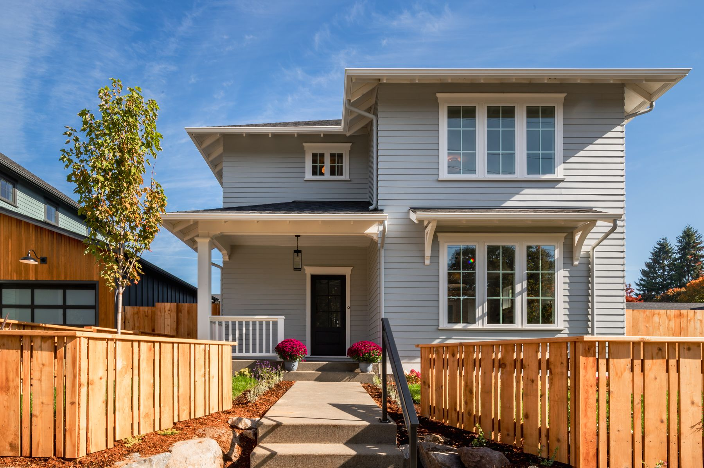
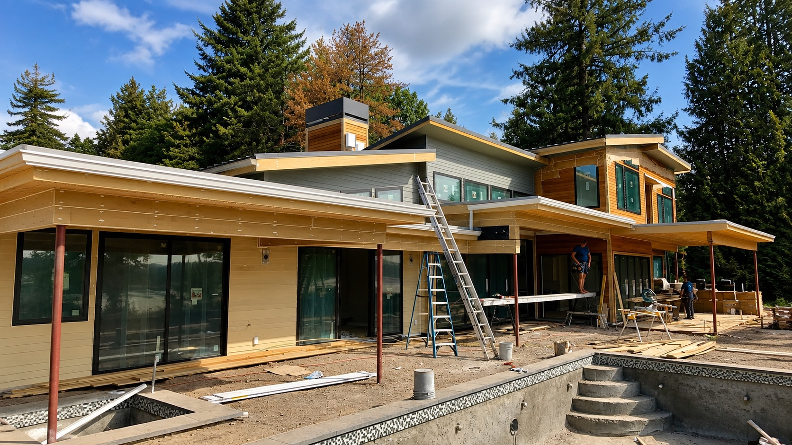
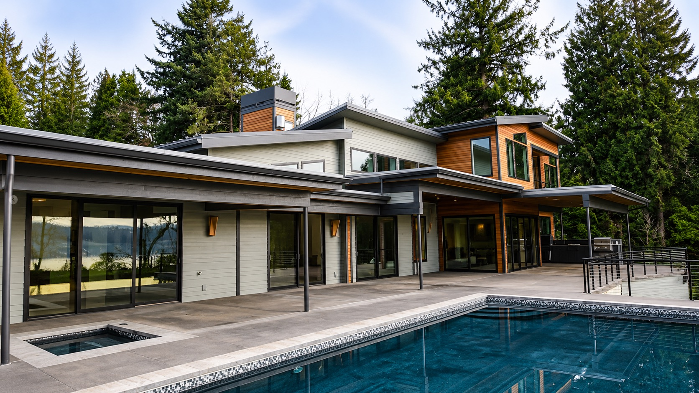

Exterior painting in Vancouver, WA.
Exterior painting means repainting the outside of your house — siding, trim, the soffits and fascia under your roof edge, decks and railings. Fine Finishes NW paints and stains exteriors throughout Clark County, Washington and the Portland, Oregon area, using paint made to handle Northwest rain and sun. The prep comes first: washing, scraping, sanding, caulking and priming before any paint goes on. We're licensed, bonded and insured in both states.
It's almost never the paint.
When an exterior fails early — peeling on the south wall, blistering under the eaves, caulk lines splitting open after one winter — the paint is rarely the culprit. It's what happened before the paint.
Coating over chalky, dirty, or still-damp siding. Skipping the primer on bare wood. Caulking with the cheap stuff. Spraying without back-brushing so nothing actually keys into the surface. Every one of those saves a contractor a day and costs you a repaint.
Our climate is unforgiving about this. Wet winters, hard UV in July, and big daily temperature swings put more stress on a coating than almost anywhere else in the country. Prep is not the part to economise on here.

The part you can't see.
Six steps that happen before the finish coat — and that determine whether it lasts five years or fifteen.
Wash & Dry
Pressure or soft wash to strip dirt, chalk, mildew and pollen — then we let it dry properly. Coating over trapped moisture is the single fastest way to a peeling wall.
Scrape & Sand
Failing paint removed back to a sound edge and feathered smooth. Where lead-era coatings are a possibility on older homes, we follow RRP-safe practice.
Repair
Rotten trim, split siding and failed glazing replaced or repaired before we coat. We'll show you what we found and what it costs before doing the work — never a surprise on the invoice.
Caulk & Seal
Every joint, seam and penetration sealed with a high-grade elastomeric that stays flexible through the freeze-thaw cycle instead of splitting in the first cold snap.
Prime
Bare wood, repairs and stains spot-primed or fully primed depending on what the surface needs. Tannin-blocking primer on cedar and redwood, always.
Coat & Back-Brush
Premium 100% acrylic topcoats applied at the manufacturer's spec thickness, back-brushed into the grain so the coating bonds rather than just sitting on the surface.

Siding to soffits, decks to doors.
- Siding — lap, board-and-batten, cedar shingle, fiber cement, stucco and T1-11.
- Trim, fascia & soffits — including the high, awkward runs that need proper staging.
- Front doors & garage doors — finished to be the best-looking thing on the street.
- Decks, railings & fences — stained or painted, with the sanding actually done first.
- Cedar & natural wood — stain and clear finishes that let the grain show through.
- Your landscaping — covered and protected, and the site raked clean at the end.
What a real transformation looks like.
The same home, during construction and after finishing. Drag the handle.


Questions we get asked.
What time of year can you paint an exterior here?
Realistically late spring through early autumn is the sweet spot, but we work outside that window whenever conditions allow. What matters isn't the month — it's dry surfaces, no rain in the forecast for the cure window, and surface temperatures above roughly 50°F. We watch the forecast and we'll reschedule rather than push a coating on in the wrong conditions.
How long will an exterior paint job last?
Properly prepped and coated, expect eight to twelve years on most Northwest homes, sometimes longer on protected elevations. South and west walls take the most UV and usually show wear first. Cheap prep can cut that to three or four years, which is why the low bid is so often the expensive option.
Do you pressure wash? Doesn't that damage siding?
We wash every exterior, but we match the method to the substrate — soft washing at low pressure for cedar, older siding and anything fragile. High-pressure blasting can drive water behind siding and raise the wood grain, so we don't use it as a default.
My house was built before 1978. Does that matter?
It might. Homes from before 1978 can have lead-based paint under later layers, which changes how the surface must be disturbed and contained. We follow EPA RRP-safe work practices on those homes. It's not a reason to avoid the project — it's a reason to hire someone who'll handle it properly.
Can you paint over failing or peeling paint?
No, and nobody should. New paint bonds to what's under it, so coating over failing paint just buys you a fresh-looking wall that peels off in sheets a year later, taking your money with it. Failing areas get scraped back to sound material and primed first.
Do you paint stucco and fiber cement?
Yes, both — each needs a different prep and coating approach. Stucco needs breathable coatings and any cracks addressed first; fiber cement needs the right primer on cut edges. We'll talk through the specifics for your siding at the estimate.
Last updated